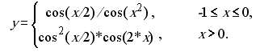
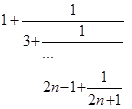
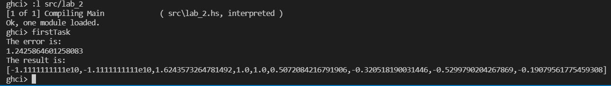
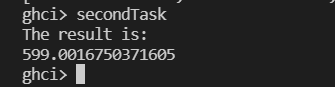

Лабораторна робота 2
Тема: Рекурентні співвідношення для тригонометричних, експоненціальних функцій та ланцюгові дроби.
Варіант 1
Мета
Опанувати теоретичні основи застосування рекурентних співвідношень для обчислення тригонометричних, експоненціальних, степеневих функцій та розробити програми функціональними мовам програмування для обчислення їх значень.
Умова задачі
Задача 1
Обчислити значення функції у, розвинувши функцію cos(x) у ряд Тейлора. Аргумент х змінюється від -2 до 2 з кроком 0.5. Визначити похибку.

Задача 2
Обчислити нескінчений ланцюговий дріб, задавши значення n при виклику функції

Аналіз задачі та математичні забезпечення для розв’язання
Формула, що виражає член послідовності через один або декілька попередніх, називається рекурентним співвідношенням. Послідовність, члени якої задовольняють деякому рекурентному співвідношенню, називається рекурентною.
У загальному випадку рекурентне співвідношення визначає залежність члена послідовності {Sn} від k попередніх членів: Sn = F(Sn-k,…,Sn-1).
У задачі необхідно розвинути тригонометричну функцію cos у ряд Маклорена (Тейлора) за наступною формулою 1 – x^2/2! + x^4/4! – x^6/6! + ….
Обгрунтування вибору середовища та мови програмування
Середовище програмування: VS Code
Обгрунтування:
- Легкий та зручний редактор коду, який можна використовувати майже для будь-якої мови програмування.
- Має всі необхідні функції для програмування і працює набагато швидше в порівнянні з іншими IDE.
Мова функціонального програмування: Haskell
Обгрунтування:
- Це одна з самих популярних функціональних мов програмування.
- Зручна та обширна документація.
- Звичний синтаксис.
Код програми
Задача 1
factorial :: Double -> Double
factorial 0 = 1
factorial n = n * factorial (n - 1)
uCos :: Double -> Double -> Double -> Double
uCos x n precision =
if (x ** n) / factorial n > precision then (x ** n) / factorial n - uCos x (n + 2) precision
else 0
y x
| x >= -1 && x <= 0 = uCos (x / 2) 0 0.0001 / uCos (x ** 2) 0 0.0001
| x > 0 = (uCos (x / 2) 0 0.0001 ** 2) * uCos (2 * x) 0 0.0001
| otherwise = -11111111111
firstTask = do
putStrLn "The error is:"
let custom = uCos 5 1 0.00000000001
let buildin = cos 5
print (abs (custom - buildin))
putStrLn "The result is:"
print (map y [-2, -1.5 .. 2])
Задача 2
fraction :: Double -> Double
fraction 0 = 1
fraction n = (2*n - 1) + (1 / fraction (n - 1))
secondTask = do
putStrLn "The result is:"
print (fraction 300)
Результати виконання
Задача 1

Задача 2

Висновки
У ході виконання лабораторної роботи було опановано теоретичні основи застосування рекурентних співвідношень для обчислення тригонометричних, експоненціальних, степеневих функцій та розроблено програми для обчислення їх значень.
У рамках першої задачі було написано програму, що обчислює значення функції, розвинувши функцію cos(x) у ряд Тейлора. Аргумент х змінюється від -2 до 2 з кроком 0.5. Визначено похибку як модуль різниці між значеннням користувацької та встроєної функцій.
У рамках другої задачі було написано програму, що обчислює нескінчений ланцюговий дріб, задавши значення n при виклику функції.